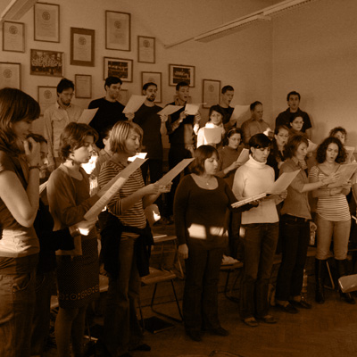
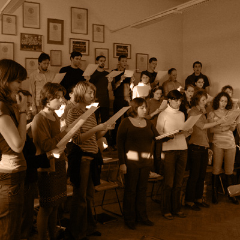
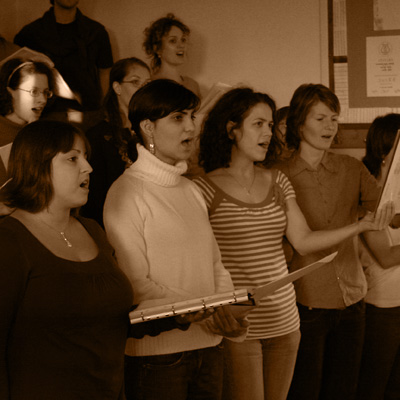
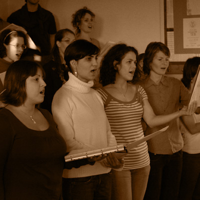
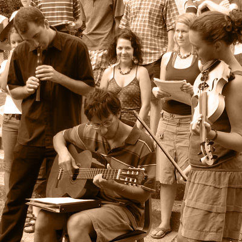
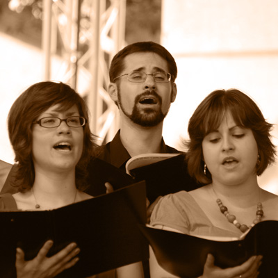
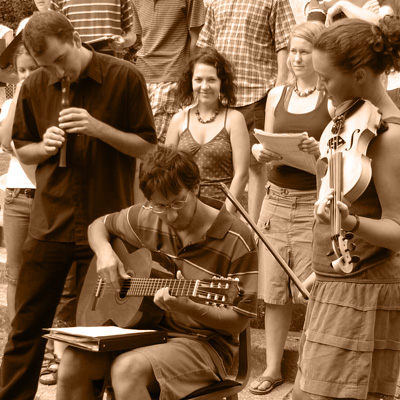
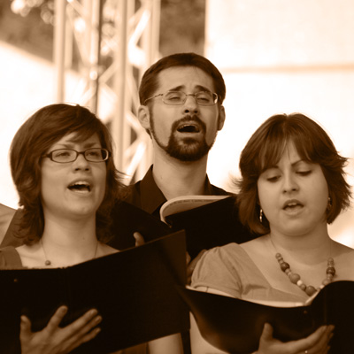
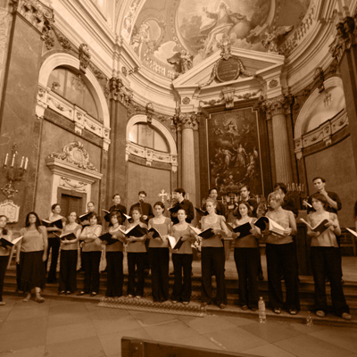
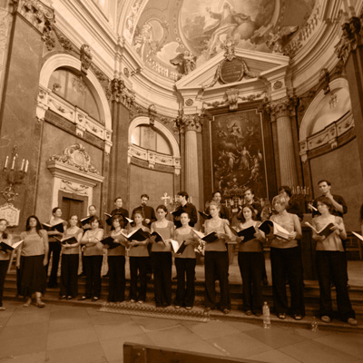

Aktuális
Kórusunk idén nyáron lesz 20 éves. Évadzáró koncertünk 2024. június 29-én délután négytől lesz.
Helyszín nincs nincs még fent a honlapon...
Következő fellépéseink:
Karácsonyi koncert időpont: 2024. december ... (pontos időpont még egyeztetés alatt).
Helyszín: Bécsikapu téri Evangélikus Templom.Próbák helyszíne és időpontja:
Helyszín: Budapest VI. Kerületi Derkovits Gyula Általános Iskola 1068 Budapest, Városligeti fasor 4.

Minden szerdán 18:00 és 20:00 között
Történet
A kórus 2004-ben alakult meg Perugiában a város nyári egyetemének hallgatóiból. A Budapestre hazatérő magyar alapító tagokhoz újabbak csatlakoztak, s a kamarakórus 2005 óta ELTE Olasz Tanszékének kórusaként működik. A jelenlegi tagok nagy része az ELTE valamelyik nyelvszakán tanult, és a kórusba gyakran járnak Magyarországon élő külföldiek is. Az énekkar több külföldi és magyar kórussal, zenekarral szakmai, baráti kapcsolatban áll, rendszeresen szervez csereutazásokat. A kórus gyakran koncertezik magyar és külföldi városokban. Turnézott már Marosvásárhelyen, Beregszászon, Perugiában, Fabrianóban, Assisiben, Firenzében, San Gimignanoban, Milánóban, Gmundenben, Párizsban. 2008-ban és 2015-ben bekerült a Guido d’Arezzo Nemzetközi Kórusverseny résztvevői közé. Alsó-Szászországban a Hittfeldi Vegyeskarral közösen oratórikus műveket adott elő, 2010-ben John Rutter Magnificatját, 2012-ben Bach Máté passióját, legutóbb, 2014-ben pedig Carl Orff Carmina Buranaját.
Tovább olvasok ...Karvezető
Murányi Eszter karvezető, szolfézstanár.
Gyermekként tagja volt a Magyar Rádió Gyermekkórusának, majd az Angelica leánykarban énekelt. 2002-ben szerzett diplomát a Liszt Ferenc Zeneművészeti Egyetem Tanárképző Intézetének Zeneelmélet-Szolfézs-Karvezetés szakán, emellett olasz nyelv és irodalmat hallgatott az Eötvös Loránd Tudományegyetem Bölcsészettudományi Karán (2001-2006). Végzését követően a Continuo Zeneiskolában kezdett tanítani, majd a Hubay Jenő Zeneiskola szolfézstanára, és gyermekkórusának vezetője volt. 2015-2016-ban a Pekingi Magyar Kulturális Intézetben létesített Kodály Pont oktatója, hazatérése után a Tóth Aladár Zeneiskola szolfézstanára lett.
2003-tól 2014 között a rákospalotai Tavasz Nőikart vezette, jelenleg a Perugiában általa (2004-ben) alapított kórus, a „La Caffettiera Stioppeta" irányítója, amely 2005 óta az ELTE olasz tanszékének kórusaként működik.
Tovább olvasok ...Tagok
Szoprán
Alt
Tenor
Basszus
Képek
 

 

 



 


Videók
Audio
Archívum
Kapcsolat

LA CAFFETTIERA STIOPPÉTA
Karvezető | MURÁNYI ESZTER |
E-mail cím | stioppeta@gmail.com
Facebook oldal | https://www.facebook.com/La-Caffettiera-Stioppéta-304215219605161
Wikipedia oldal | https://hu.wikipedia.org/wiki/La_Caffettiera_Stioppeta